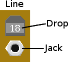
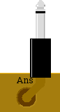
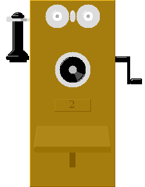

Currently, drag-n-drop is not supported. In general, clicking on an object activates it in some sense.
| Each circuit consists of two "Ring-off" (R.O.) drops, two phone plugs, a "Ring Switch" and a "Listen Switch". A R.O. drop will fall when the subscriber cranks their magneto, if the associated plug has been inserted into the subscriber line jack. |
|
 Each "subscriber line" consists of a "Line Drop" and a "Line Jack". The line drop will fall when the subscriber cranks their magneto, if there is no circuit plugged into the line jack. |

Clicking on a Phone Plug toggles it between the "pulled out" and normal (seated) state, with visual feedback. Clicking on another plug while one is "selected" will seat the previous one and pull-out the current one.